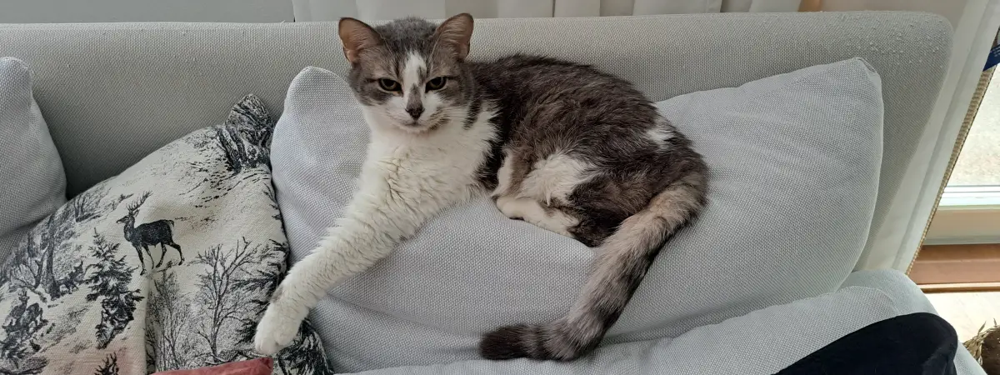

In Memory of Noki ✝
Noki came to us together with his brother Ruska on September 8th, 2020. In his previous cat family, Noki had clearly been the boss — and that side of him followed him here as well. He was stubborn, strong-willed, and always knew exactly what he wanted. Despite that, he settled into our home almost immediately and quickly discovered all the softest sleeping spots.
Noki was an ash-gray tabby cat, which is where he got his name from — “noki” translates roughly to soot in English. His fur was beautifully light and white-dominant.
Beneath his stubborn personality, Noki was an incredibly social and gentle cat. He loved sitting on laps and got along wonderfully with people. His determination often showed in amusing ways: pawing at doors he wanted opened or loudly announcing when it was time for food. At bedtime, he would happily curl up beside us to sleep.
Out of all our cats, Noki was perhaps the one who loved the outdoors the most. We could spend long periods outside together, and he always eagerly wanted to go exploring. In fact, he often asked to be let outside himself. Playing with Noki was always wonderfully energetic and chaotic.
In the summer of 2023, Noki was diagnosed with hyperthyroidism, and later that same December, kidney failure was discovered as well. We were told he might only have around six months left to live.
During the autumn of 2024, his illnesses began affecting him much more severely, and we eventually had to make the heartbreaking decision to let him go peacefully.
On November 1st, 2024, at 18:01, Noki crossed the rainbow bridge to
chase the stars.
He will always live on in our memories ♥